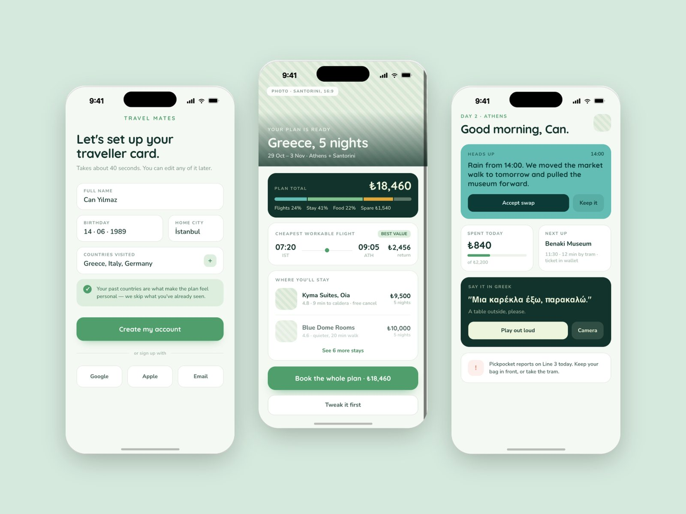
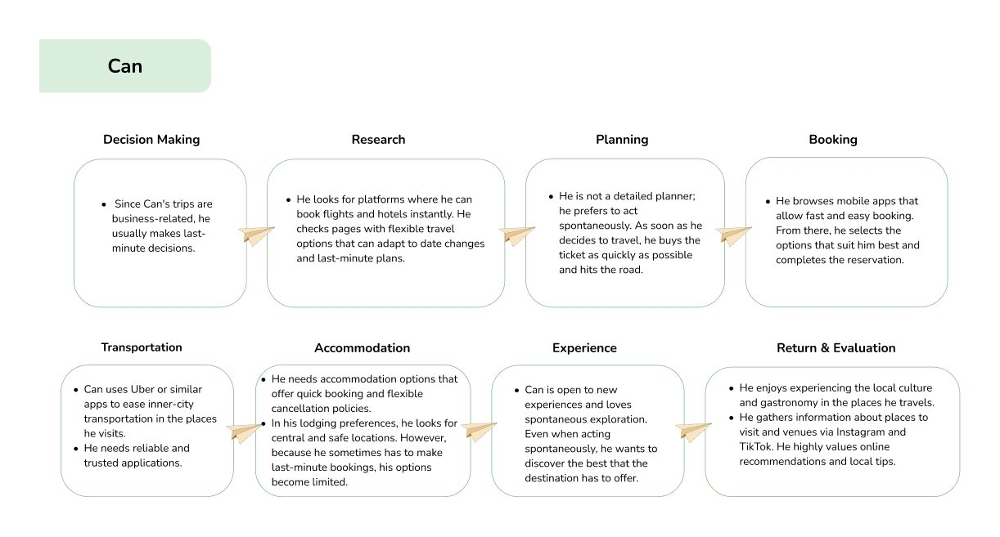
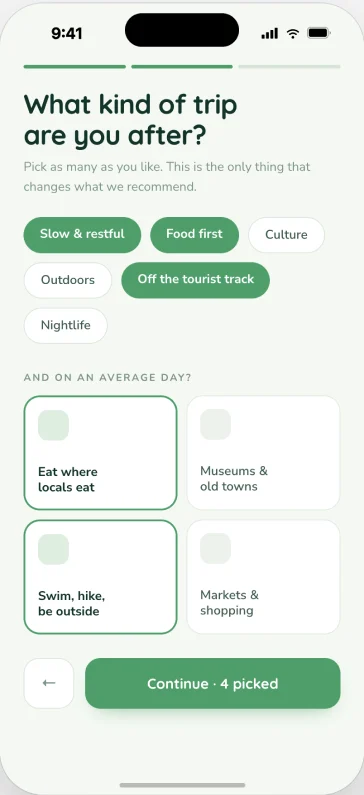
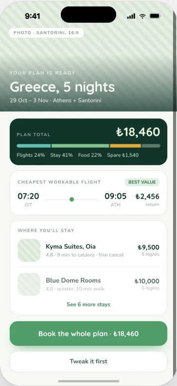
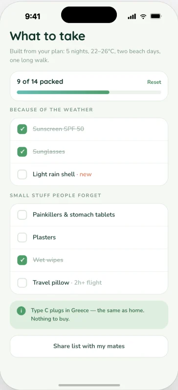
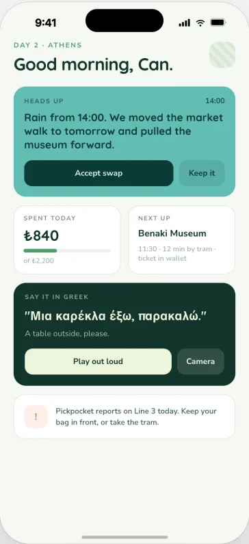
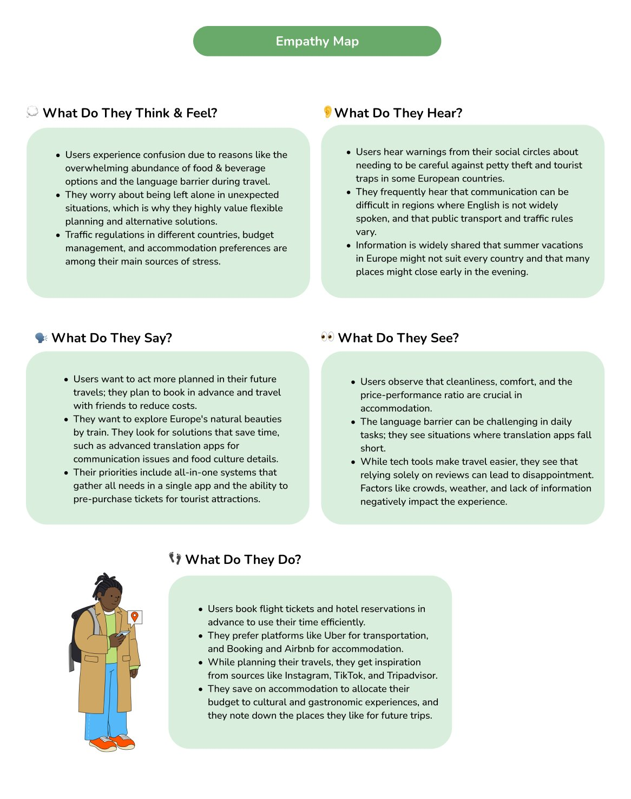
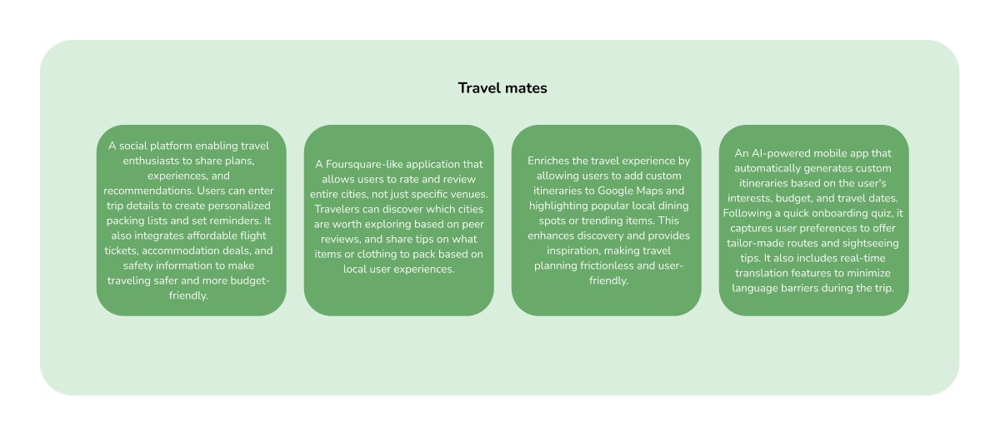
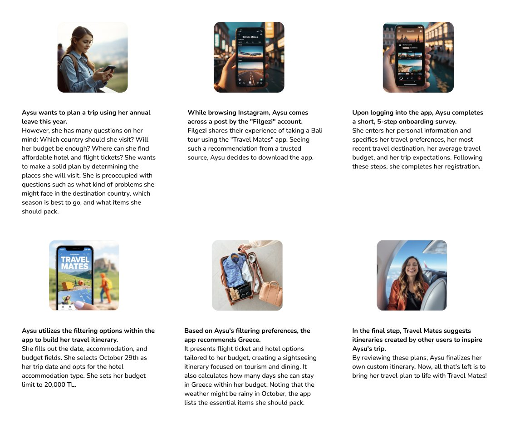

Travelling Europe is exciting, and stressful.
Safety concerns, language barriers and adapting to local life add friction for young travellers on short trips.
Case study 04 · September 2024 · Design thinking
A social travel-planning app that helps young travellers plan Europe trips with confidence, using plans shared by people like them.

Safety concerns, language barriers and adapting to local life add friction for young travellers on short trips.
Interviewees planned through Instagram, TikTok and peer tips, and wanted one place for everything.
Share and explore itineraries, plan by budget and dates, and get packing lists and safety tips in one app.
The problem: the overall holiday experience of young people travelling to Europe.
I ran 6 in-depth online interviews of 30–35 minutes with travellers aged 18–45: frequent Europe travellers, white-collar professionals and budget-conscious people who prioritise safety, comfort and time. I synthesised them into an empathy map, personas and journey maps.
Trips are planned around work and limited time off, so spontaneous decisions are common. Location, cleanliness and reviews decide where to stay, and social media is essential.
Travellers want rich experiences in a short time. Language barriers are handled with translation apps, and local experiences are preferred over tourist crowds.
They want more organised, stress-free trips next time, and are motivated to share what they learned to inspire others.
The journey of “The Spontaneous Traveler”, from deciding to go to coming home.

The storyboard, turned into screens.

Preferences, last trip, budget and expectations shape every suggestion.

Dates, stay type and a budget limit set the frame before browsing.

Flights, hotels, itinerary, days within budget and a weather-aware packing list.

Rain at 14:00? The plan swaps itself. Spend, next stop and a phrase in the local language sit on one screen.

The interviews, organised by what people feel and do: stress about language and budgets, inspiration from social media.

Eight quick ideas narrowed to four concepts. The social planning network was chosen to develop.

Aysu finds the app on Instagram, completes a 5-step onboarding and gets a plan within her ₺20,000 budget.
Scroll inside the frame to read the full document.
Test onboarding and planning by budget with young travellers.
Check whether people trust itineraries from strangers, and what signals would help, such as reviews or similar profiles.
Develop the in-trip screen (weather changes, spending, local phrases) into a full flow.